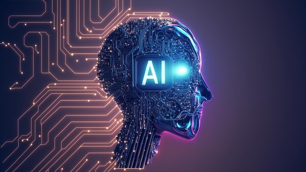
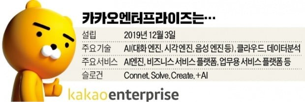
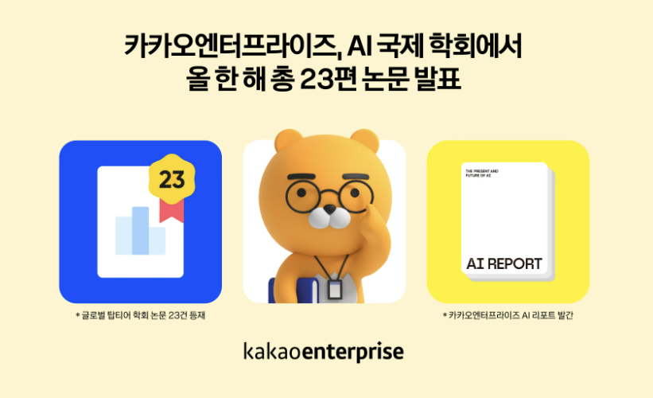
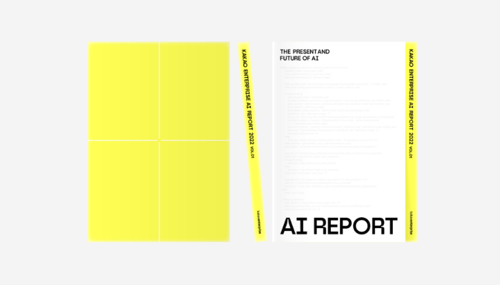

Interest
(1) 관심 있는 기술: 인공지능
개요
일반적으로 인간의 지능이 필요하거나 인간이 분석할 수 있는 것보다 규모가 큰 데이터를 포함하는 방식으로 추론, 학습 및 행동할 수 있는 컴퓨터 및 기계를 구축하는 것과 관련된 과학 분야
목적
기계에 이미지와 음성을 이해하는 능력을 부여하여 사람과 같은 방식으로 행동하고 반응을 내는 것
주요 기능
-
기계학습 (Machine Learning)
데이터를 기반으로 패턴을 학습하고 예측, 분류, 군집 등의 작업을 수행하는 능력을 갖추고 있다.
지도 학습, 비지도 학습, 강화 학습 등의 다양한 학습 방법을 사용하여 문제 해결에 적용된다. -
자연어 처리 (Natural Language Processing, NLP)
인간의 언어를 이해하고 처리하는 능력을 갖추고 있으며 문장 분석, 감정 분석, 기계 번역, 질의 응답 시스템, 챗봇 등 다양한 언어 관련 작업에 사용된다.
-
컴퓨터 비전 (Computer Vision)
시각적인 정보를 해석하고 이해하는 능력을 갖추고 있으며 이미지 분류, 객체 검출, 얼굴 인식, 자율 주행 등의 작업에서 활용된다.
이처럼 위의 주요 기능은 다양한 분야에서 활용되며, 계속해서 발전하고 새로운 기능과 응용 분야가 추가될 수 있습니다. 이 외에도 감정 분석, 자동 번역, 의료 진단 등 더 많은 기능이 있습니다.
(2) 기술의 중요성 및 산업 분야에서의 활용
-
중요성
데이터 홍수 대응: 현대 사회에서는 많은 양의 데이터가 생성되고 있습니다. 이를 효과적으로 분석하고 활용하는 데 인공지능은 필수적인 도구입니다.
자동화와 생산성 향상: 인공지능은 작업의 자동화와 프로세스의 최적화를 가능하게 합니다. 이를 통해 생산성을 향상시키고 인력을 비용 효율적으로 활용할 수 있습니다.
예측과 의사 결정 지원: 인공지능은 데이터를 분석하여 예측 모델을 구축하고, 의사 결정에 필요한 정보를 제공합니다. 이를 통해 조직의 전략과 의사 결정에 도움을 줍니다. -
산업/사회 동향과의 연계성
자율 주행과 스마트 도시: 자율 주행차, 스마트 도시 등 인공지능을 기반으로 한 기술들이 급속도로 발전하고 있습니다. 이를 통해 교통 혼잡 해결, 에너지 효율 개선 등의 사회적 문제를 해결할 수 있습니다.
의료 진단과 개인화 치료: 인공지능은 의료 분야에서 진단 보조, 개인화 치료 등에 활용될 수 있습니다. 의료 기술의 발전과 개인 맞춤형 치료 방법의 개발에 도움을 줄 수 있습니다.
산업 자동화와 스마트 제조: 인공지능은 산업 자동화와 스마트 제조 분야에서 핵심 기술로 사용됩니다. 공장의 자동화, 생산 공정의 최적화, 품질 관리 등을 개선하여 생산성과 효율성을 향상시킬 수 있습니다.
이처럼 인공지능은 다양한 산업과 사회 영역에서 혁신과 발전의 핵심 요소로 인정되고 있습니다. 기술의 발전과 데이터의 증가로 인공지능의 중요성은 더욱 커질 것으로 예상되며, 산업과 사회의 다양한 분야에서 활용 가능성이 계속해서 확장될 것으로 기대됩니다.
(3) 관련(관심)기업 소개

위 이미지 클릭시 기업 사이트로 이동...
기업이름: 카카오 엔터프라이즈
본부 위치: 경기도 성남시 분당구 판교역로 235
그 외의 기본 정보

기업의 목표
우리 생활을 이어주는 모든 것을 연결하여 불편함은 줄이고 더 가치 있는 것은 집중해새로운 방식의 삶을 창조하는 것이며 이 모든 것들 AI와 함께 한다.기업의 핵심 가치
인공지능과 데이터, 클라우드, 검색 기술로 비즈니스와 일상에 유례없는 변화를 이끌어내는 것. 그리고 이변화를 더 많은 사람들이, 쉽게 누릴 수 있는 세상을 만드는 것이다.(4) 기업의 성과
2022.12.27: 인공지능(AI) 학회에서 22년 상반기 17편, 하반기 6편 총 23편의 논문을 발표
위 이미지 클릭시 해당 사이트로 이동...
카카오엔터프라이즈는 다수의 세계 권위 학회에서 AI 분야의 연구 성과를 발표하여 AI 기술 리더십 역량을 입증했습니다. 다음은 발표된 연구 성과들의 주요 내용입니다.EMNLP (세계 최고 자연어처리 국제학회)
자체 개발한 인공지능 자연어처리 모델 '리틀버드(LittleBird)'를 활용하여 긴 문서에 대한 질의응답을 빠른 처리를 선보였으며, 번역 성능 향상 및 새로운 번역 방법을 제안하였습니다. 또한, 온라인 상의 혐오 표현과 관련된 연구 성과를 발표하여 언어모델의 치팅 문제를 해결하고 프라이버시와 윤리 이슈를 경감시키는 평가셋을 제시했습니다.IEEE Access (AI 분야 국제 학술지)
얼굴 인식 프로젝트에 적용되고 있는 연구 성과 및 긴 비디오에서 행동을 예측하는 시간적 행동 분할 방법론을 소개했습니다. 이를 통해 작은 범위로 아키텍처 후보군을 줄이고, 모델 학습과 아키텍처 탐색을 동시에 수행할 수 있는 새로운 알고리즘을 제안했습니다.COLING (국제 전산 언어 학술대회)
챗봇 서비스에 관한 연구 논문을 발표하였는데, 추출된 데이터와 이전 대화를 조합해 적절한 답변을 생성하는 효율적인 방법론을 제시했습니다.또한, 카카오엔터프라이즈는 얼굴 인식 기술 대회인 FRVT에서 1:1 부문과 1:N 키오스크 부문에서 1위를 차지하였으며, 메타AI의 KILT 통합벤치마크에서 주관한 글로벌 기계독해 대회 ELI5에서도 1위를 차지했습니다.
이러한 성과들은 AI 기술력과 업적을 인정받는 결과로, 카카오엔터프라이즈는 실제 서비스에 적용되어 사용자에게 효용을 제공하는 실용적인 연구에도 주력하고 있습니다.
2022.12.16: 카카오엔터프라이즈 AI 리포트 발간
위 이미지 클릭시 해당 사이트로 이동...
카카오엔터프라이즈가 올해의 AI 연구 성과와 트렌드를 담은 <카카오엔터프라이즈 AI 리포트>를 발간했습니다.이번 <카카오엔터프라이즈 AI 리포트>는 전문가들이 꼽은 최신 AI 트렌드는 물론, 명실상부 ‘글로벌 최고 AI’를 키워온 카카오엔터프라이즈의 성장 스토리를 담았습니다. 또한 카카오엔터프라이즈의 주요 AI 기술에 대한 쉽고 재미있는 설명과 함께, 엔터프라이즈 IT 기업으로서 물류·컨택센터·스마트시티 등 다양한 산업 분야에 실용적인 AI를 접목한 혁신 사례를 전합니다. 마지막으로, 카카오 공동체 최대의 AI 전문 조직인 AI Lab & Service의 독특한 연구개발 문화와 카카오엔터프라이즈가 바라보는 AI 윤리도 살펴볼 수 있습니다.
(5) 해당 기업의 관심과 동기
카카오엔터프라이즈의 기업 목표부터 성과를 살펴보면 사람들에게 편리함을 제공하고 혁신을 이끌어가기 위해 많은 노력을 기울여왔다는 것을 알 수 있습니다. 이는 제가 이루고자 하는 목표와 같았기에 카카오에 대한 관심은 자연스럽게 높아졌습니다. 이를 통해 저 역시 앞으로도 AI 기술을 선도하는 카카오엔터프라이즈에서 어떤 AI 기술로 사람들에게 도움이 될 수 있는지 함께 탐구하고 만들어보고 싶습니다.